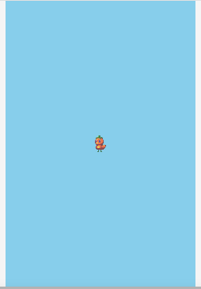

Sprite は、Shape と同じ基底クラスを継承していますので、共通のプロパティやメソッドを使用することができます。
Spriteの透明度
Shapeと同じくalphaプロパティに指定します。 以下は、スプライトを徐々に透明する処理です。
// 透明度変化アニメーション
sp = Sprite('tomapiko').addChildTo(this).setPosition(320, 480);
sp.update = function() {
// 徐々に透明にする
sp.alpha -= 0.01;
};
サンプルコード
コードを見る
// グローバルに展開
phina.globalize();
// アセット
var ASSETS = {
// 画像
image: {
'tomapiko': 'https://cdn.jsdelivr.net/gh/phinajs/phina.js@develop/assets/images/tomapiko.png',
},
};
/*
* メインシーン
*/
phina.define("MainScene", {
// 継承
superClass: 'DisplayScene',
// 初期化
init: function() {
// 親クラス初期化
this.superInit();
// 背景色
this.backgroundColor = 'skyblue';
// 透明度変化アニメーション
sp = Sprite('tomapiko').addChildTo(this).setPosition(320, 480);
sp.update = function() {
// 徐々に透明にする
sp.alpha -= 0.01;
};
},
});
/*
* メイン処理
*/
phina.main(function() {
// アプリケーションを生成
var app = GameApp({
// MainScene から開始
startLabel: 'main',
// アセット読み込み
assets: ASSETS,
});
// fps表示
//app.enableStats();
// 実行
app.run();
});